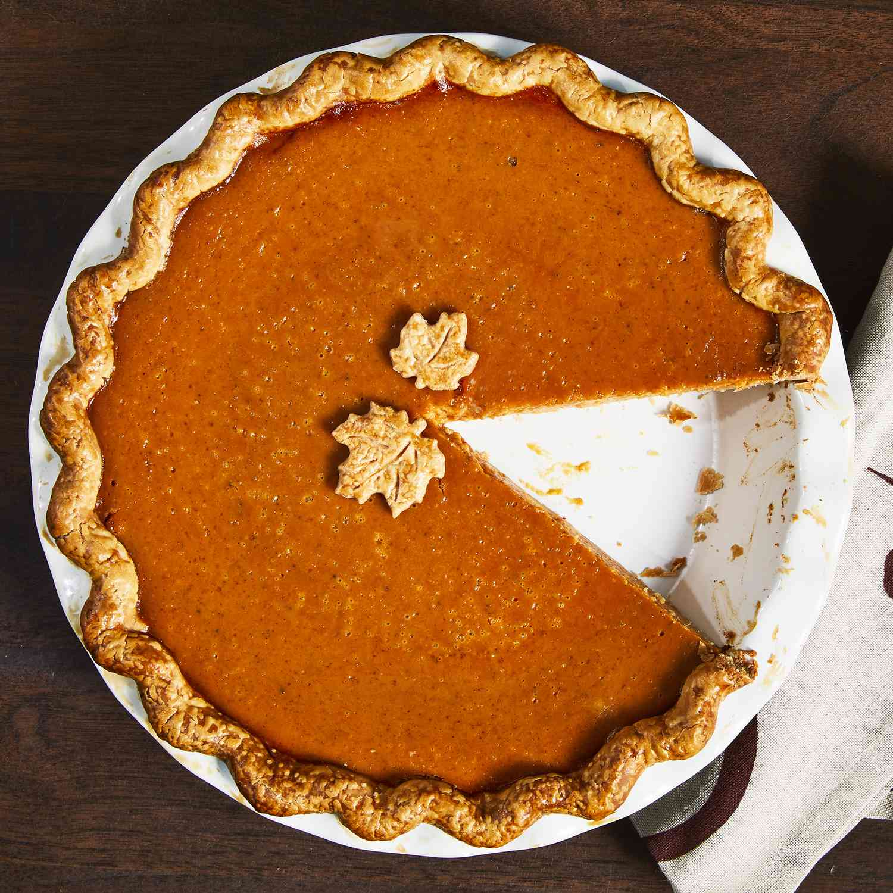

Homemade Fresh Pumpkin Pie

This homemade pumpkin pie made with mashed, cooked pumpkin is my family's favorite. Skip the canned pumpkin and store-bought crust and make your holiday pumpkin pie from scratch with a flaky homemade pastry crust and a deliciously spiced pumpkin filling. Hope you enjoy it as much as my family does!
Ingredients
Pastry Crust
- 1 ⅓ cups all-purpose flour
- ½ teaspoon salt
- ½ cup cold butter or shortening
- 3 tablespoons cold water, or more as needed
Pumpkin Filling
- 2 cups mashed, cooked pie pumpkin
- 1 (12 fluid ounce) can evaporated milk
- 2 large eggs, beaten
- ½ cup packed brown sugar
- ½ teaspoon ground cinnamon, or more to taste
- ½ teaspoon ground ginger, or more to taste
- ½ teaspoon ground nutmeg, or more to taste
- ½ teaspoon salt
Steps
- Mix the flour and salt. Cut in the shortening, then add the water.
- Shape the dough into a ball. Roll it out on a lightly floured surface.
- Cut the rolled dough and fit it into the pie pan.
- Beat the filling ingredients together, then pour it into the prepared crust.
- Bake in a preheated oven until a knife comes out clean.